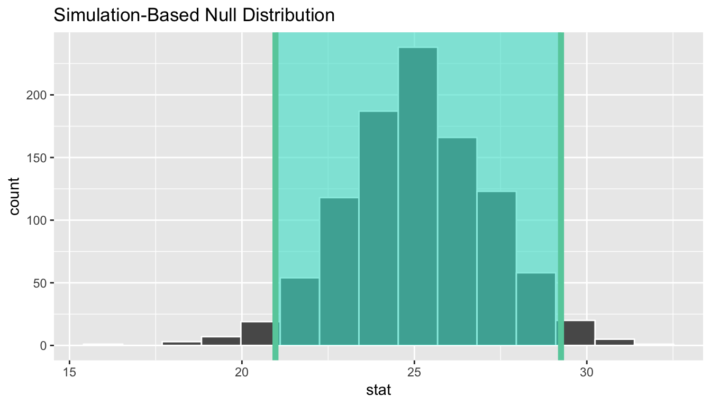
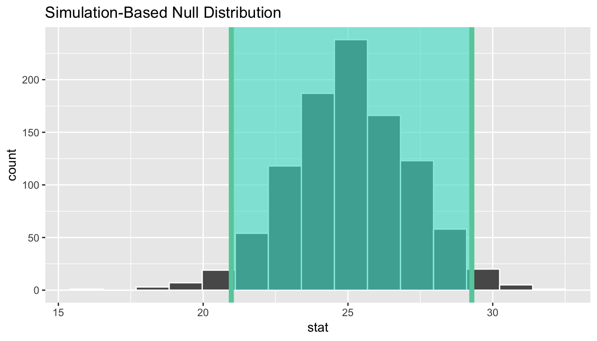
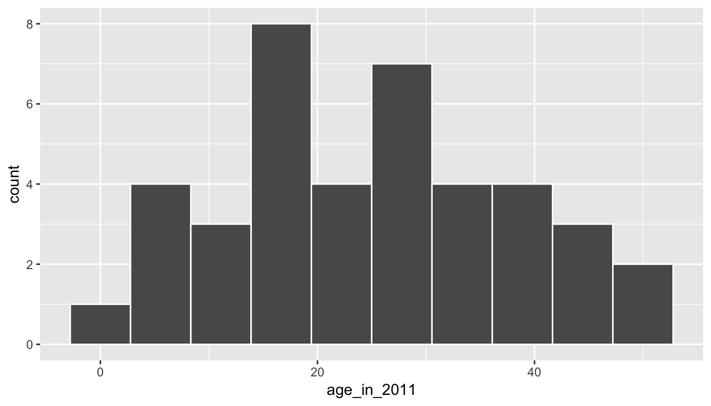
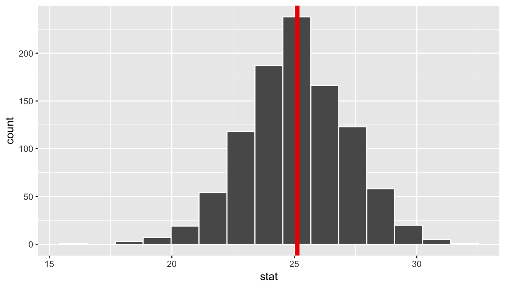
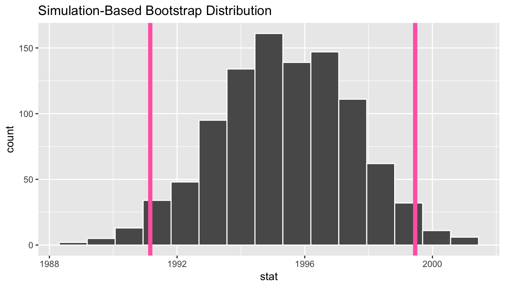
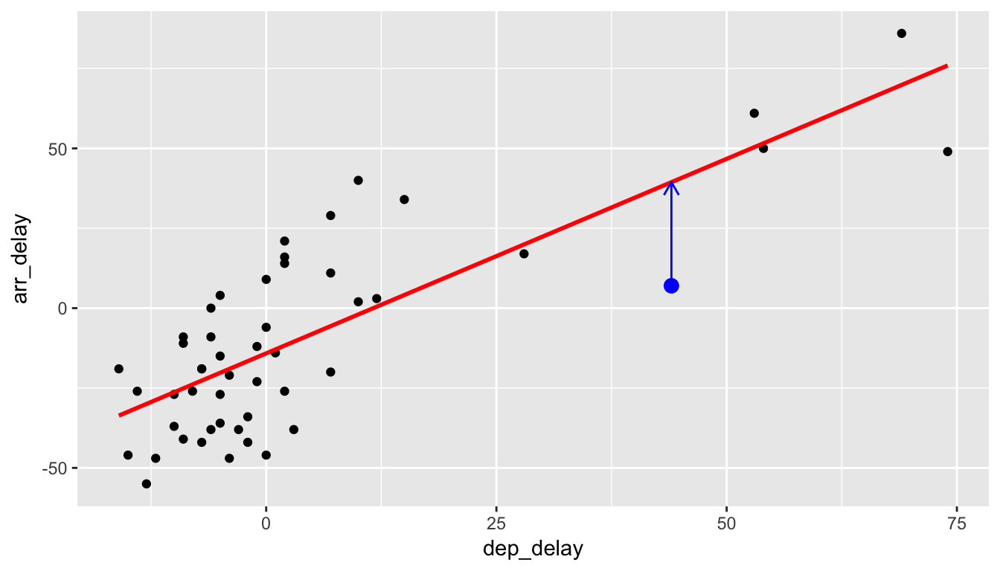
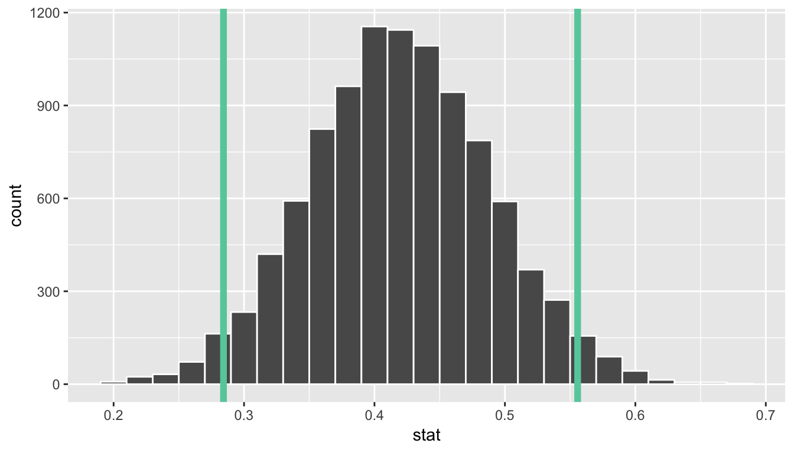

9 Confidence Intervals
Note: This chapter is still under construction. If you would like to contribute, please check us out on GitHub at https://github.com/moderndive/moderndive_book.
Please check out our sneak peak of infer below in the meanwhile. For more details on infer visit https://infer-dev.netlify.com/.

In Chapter 8, we explored the process of sampling from a representative sample to build a sampling distribution. The motivation there was to use multiple samples from the same population to visualize and attempt to understand the variability in the statistic from one sample to another.
In most cases, we don’t have the population values as we did with the bowl of balls. We only have a single sample of data from a larger population. We’d like to be able to make some reasonable guesses about population parameters using that single sample to create a range of plausible values for a population parameter. This range of plausible values is known as a confidence interval and will be the focus of this chapter. And how do we use a single sample to get some idea of how other samples might vary in terms of their statistic values? One common way this is done is via a process known as bootstrapping that will be the focus of the beginning sections of this chapter.
Needed packages
Let’s load all the packages needed for this chapter (this assumes you’ve already installed them). If needed, read Section 2.3 for information on how to install and load R packages.
library(dplyr)
library(ggplot2)
library(janitor)
library(moderndive)
library(infer)
# For loading CSV files:
library(readr)9.1 Bootstrapping
9.1.1 Data explanation
The moderndive package contains a sample of 40 pennies collected and minted in the United States. Let’s explore this sample data first:
pennies_sampleThe pennies_sample data frame has rows corresponding to a single penny with two variables:
yearof minting as shown on the penny andage_in_2011giving the years the penny had been in circulation from 2011 as an integer, e.g. 15, 2, etc.
Suppose we are interested in understanding some properties of the mean age of all US pennies from this data collected in 2011. How might we go about that? Let’s begin by understanding some of the properties of pennies_sample using data wrangling from Chapter 5 and data visualization from Chapter 3.
9.1.2 Exploratory data analysis
First, let’s visualize the values in this sample as a histogram:
ggplot(pennies_sample, aes(x = age_in_2011)) +
geom_histogram(bins = 10, color = "white")
We see a roughly symmetric distribution here that has quite a few values near 20 years in age with only a few larger than 40 years or smaller than 5 years. If pennies_sample is a representative sample from the population, we’d expect the age of all US pennies collected in 2011 to have a similar shape, a similar spread, and similar measures of central tendency like the mean.
So where does the mean value fall for this sample? This point will be known as our point estimate and provides us with a single number that could serve as the guess to what the true population mean age might be. Recall how to find this using the dplyr package:
x_bar <- pennies_sample %>%
summarize(stat = mean(age_in_2011))
x_barWe’ve denoted this sample mean as \(\bar{x}\), which is the standard symbol for denoting the mean of a sample. Our point estimate is, thus, \(\bar{x} = 25.1\). Note that this is just one sample though providing just one guess at the population mean. What if we’d like to have another guess?
This should all sound similar to what we did in Chapter 8. There instead of collecting just a single scoop of balls we had many different students use the shovel to scoop different samples of red and white balls. We then calculated a sample statistic (the sample proportion) from each sample. But, we don’t have a population to pull from here with the pennies. We only have this one sample.
The process of bootstrapping allows us to use a single sample to generate many different samples that will act as our way of approximating a sampling distribution using a created bootstrap distribution instead. We will pull ourselves up from our bootstraps using a single sample (pennies_sample) to get an idea of the grander sampling distribution.
9.1.3 The Bootstrapping Process
Bootstrapping uses a process of sampling with replacement from our original sample to create new bootstrap samples of the same size as our original sample. We can again make use of the rep_sample_n() function to explore what one such bootstrap sample would look like. Remember that we are randomly sampling from the original sample here with replacement and that we always use the same sample size for the bootstrap samples as the size of the original sample (pennies_sample).
bootstrap_sample1 <- pennies_sample %>%
rep_sample_n(size = 40, replace = TRUE, reps = 1)
bootstrap_sample1Let’s visualize what this new bootstrap sample looks like:
ggplot(bootstrap_sample1, aes(x = age_in_2011)) +
geom_histogram(bins = 10, color = "white")
We now have another sample from what we could assume comes from the population of interest. We can similarly calculate the sample mean of this bootstrap sample, called a bootstrap statistic.
bootstrap_sample1 %>%
summarize(stat = mean(age_in_2011))We can see that this sample mean is smaller than the x_bar value we calculated earlier for the pennies_sample data. We’ll come back to analyzing the different bootstrap statistic values shortly.
Let’s recap what was done to get to this bootstrap sample using a tactile explanation:
- First, pretend that each of the 40 values of
age_in_2011inpennies_samplewere written on a small piece of paper. Recall that these values were 6, 30, 34, 19, 6, etc. - Now, put the 40 small pieces of paper into a receptacle such as a baseball cap.
- Shake up the pieces of paper.
- Draw “at random” from the cap to select one piece of paper.
- Write down the value on this piece of paper. Say that it is 28.
- Now, place this piece of paper containing 28 back into the cap.
- Draw “at random” again from the cap to select a piece of paper. Note that this is the sampling with replacement part since you may draw 28 again.
- Repeat this process until you have drawn 40 pieces of paper and written down the values on these 40 pieces of paper. Completing this repetetion produces ONE bootstrap sample.
If you look at the values in bootstrap_sample1, you can see how this process plays out. We originally drew 28, then we drew 11, then 7, and so on. Of course, we didn’t actually use pieces of paper and a cap here. We just had the computer perform this process for us to produce bootstrap_sample1 using rep_sample_n() with replace = TRUE set.
The process of sampling with replacement is how we can use the original sample to take a guess as to what other values in the population may be. Sometimes in these bootstrap samples, we will select lots of larger values from the original sample, sometimes we will select lots of smaller values, and most frequently we will select values that are near the center of the sample. Let’s explore what the distribution of values of age_in_2011 for six different bootstrap samples looks like to further understand this variability.
six_bootstrap_samples <- pennies_sample %>%
rep_sample_n(size = 40, replace = TRUE, reps = 6)ggplot(six_bootstrap_samples, aes(x = age_in_2011)) +
geom_histogram(bins = 10, color = "white") +
facet_wrap(~ replicate)
We can also look at the six different means using dplyr syntax:
six_bootstrap_samples %>%
group_by(replicate) %>%
summarize(stat = mean(age_in_2011))Instead of doing this six times, we could do it 1000 times and then look at the distribution of stat across all 1000 of the replicates. This sets the stage for the infer R package (Bray et al. 2018) that was created to help users perform statistical inference such as confidence intervals and hypothesis tests using verbs similar to what you’ve seen with dplyr. We’ll walk through setting up each of the infer verbs for confidence intervals using this pennies_sample example, while also explaining the purpose of the verbs in a general framework.
9.2 The infer package for statistical inference
The infer package makes great use of the %>% to create a pipeline for statistical inference. The goal of the package is to provide a way for its users to explain the computational process of confidence intervals and hypothesis tests using the code as a guide. The verbs build in order here, so you’ll want to start with specify() and then continue through the others as needed.
9.2.1 Specify variables

The specify() function is used primarily to choose which variables will be the focus of the statistical inference. In addition, a setting of which variable will act as the explanatory and which acts as the response variable is done here. For proportion problems to those in Chapter 8, we can also give which of the different levels we would like to have as a success. We’ll see further examples of these options in this chapter, Chapter 10, and in Appendix B.
To begin to create a confidence interval for the population mean age of US pennies in 2011, we start by using specify() to choose which variable in our pennies_sample data we’d like to work with. This can be done in one of two ways:
- Using the
responseargument:
pennies_sample %>%
specify(response = age_in_2011)- Using
formulanotation:
pennies_sample %>%
specify(formula = age_in_2011 ~ NULL)Note that the formula notation uses the common R methodology to include the response \(y\) variable on the left of the ~ and the explanatory \(x\) variable on the right of the “tilde.” Recall that you used this notation frequently with the lm() function in Chapters 6 and 7 when fitting regression models. Either notation works just fine, but a preference is usually given here for the formula notation to further build on the ideas from earlier chapters.
9.2.2 Generate replicates

After specify()ing the variables we’d like in our inferential analysis, we next feed that into the generate() verb. The generate() verb’s main argument is reps, which is used to give how many different repetitions one would like to perform. Another argument here is type, which is automatically determined by the kinds of variables passed into specify(). We can also be explicit and set this type to be type = "bootstrap". This type argument will be further used in hypothesis testing in Chapter 10 as well. Make sure to check out ?generate to see the options here and use the ? operator to better understand other verbs as well.
Let’s generate() 1000 bootstrap samples:
thousand_bootstrap_samples <- pennies_sample %>%
specify(response = age_in_2011) %>%
generate(reps = 1000)We can use the dplyr count() function to help us understand what the thousand_bootstrap_samples data frame looks like:
thousand_bootstrap_samples %>% count(replicate)Notice that each replicate has 40 entries here. Now that we have 1000 different bootstrap samples, our next step is to calculate the bootstrap statistics for each sample.
9.2.3 Calculate summary statistics

After generate()ing many different samples, we next want to condense those samples down into a single statistic for each replicated sample. As seen in the diagram, the calculate() function is helpful here.
As we did at the beginning of this chapter, we now want to calculate the mean age_in_2011 for each bootstrap sample. To do so, we use the stat argument and set it to "mean" below. The stat argument has a variety of different options here and we will see further examples of this throughout the remaining chapters.
bootstrap_distribution <- pennies_sample %>%
specify(response = age_in_2011) %>%
generate(reps = 1000) %>%
calculate(stat = "mean")
bootstrap_distributionWe see that the resulting data has 1000 rows and 2 columns corresponding to the 1000 replicates and the mean for each bootstrap sample.
Observed statistic / point estimate calculations
Just as group_by() %>% summarize() produces a useful workflow in dplyr, we can also use specify() %>% calculate() to compute summary measures on our original sample data. It’s often helpful both in confidence interval calculations, but also in hypothesis testing to identify what the corresponding statistic is in the original data. For our example on penny age, we computed above a value of x_bar using the summarize() verb in dplyr:
pennies_sample %>%
summarize(stat = mean(age_in_2011))This can also be done by skipping the generate() step in the pipeline feeding specify() directly into calculate():
pennies_sample %>%
specify(response = age_in_2011) %>%
calculate(stat = "mean")This shortcut will be particularly useful when the calculation of the observed statistic is tricky to do using dplyr alone. This is particularly the case when working with more than one variable as will be seen in Chapter 10.
9.2.4 Visualize the results

The visualize() verb provides a simple way to view the bootstrap distribution as a histogram of the stat variable values. It has many other arguments that one can use as well including the shading of the histogram values corresponding to the confidence interval values.
bootstrap_distribution %>% visualize()
The shape of this resulting distribution may look familiar to you. It resembles the well-known normal (bell-shaped) curve.
The following diagram recaps the infer pipeline for creating a bootstrap distribution.

9.3 Now to confidence intervals
Definition: Confidence Interval
A confidence interval gives a range of plausible values for a parameter. It depends on a specified confidence level with higher confidence levels corresponding to wider confidence intervals and lower confidence levels corresponding to narrower confidence intervals. Common confidence levels include 90%, 95%, and 99%.
Usually we don’t just begin sections with a definition, but confidence intervals are simple to define and play an important role in the sciences and any field that uses data. You can think of a confidence interval as playing the role of a net when fishing. Instead of just trying to catch a fish with a single spear (estimating an unknown parameter by using a single point estimate/statistic), we can use a net to try to provide a range of possible locations for the fish (use a range of possible values based around our statistic to make a plausible guess as to the location of the parameter).
The bootstrapping process will provide bootstrap statistics that have a bootstrap distribution with center at (or extremely close to) the mean of the original sample. This can be seen by giving the observed statistic obs_stat argument the value of the point estimate x_bar.
bootstrap_distribution %>% visualize(obs_stat = x_bar)
We can also compute the mean of the bootstrap distribution of means to see how it compares to x_bar:
bootstrap_distribution %>%
summarize(mean_of_means = mean(stat))In this case, we can see that the bootstrap distribution provides us a guess as to what the variability in different sample means may look like only using the original sample as our guide. We can quantify this variability in the form of a 95% confidence interval in a couple different ways.
9.3.1 The percentile method
One way to calculate a range of plausible values for the unknown mean age of coins in 2011 is to use the middle 95% of the bootstrap_distribution to determine our endpoints. Our endpoints are thus at the 2.5th and 97.5th percentiles. This can be done with infer using the get_ci() function. (You can also use the conf_int() or get_confidence_interval() functions here as they are aliases that work the exact same way.)
bootstrap_distribution %>%
get_ci(level = 0.95, type = "percentile")These options are the default values for level and type so we can also just do:
percentile_ci <- bootstrap_distribution %>%
get_ci()
percentile_ciUsing the percentile method, our range of plausible values for the mean age of US pennies in circulation in 2011 is 20.972 years to 29.252 years. We can use the visualize() function to view this using the endpoints and direction arguments, setting direction to "between" (between the values) and endpoints to be those stored with name percentile_ci.
bootstrap_distribution %>%
visualize(endpoints = percentile_ci, direction = "between")
You can see that 95% of the data stored in the stat variable in bootstrap_distribution falls between the two endpoints with 2.5% to the left outside of the shading and 2.5% to the right outside of the shading. The cut-off points that provide our range are shown with the darker lines.
9.3.2 The standard error method
If the bootstrap distribution is close to symmetric and bell-shaped, we can also use a shortcut formula for determining the lower and upper endpoints of the confidence interval. This is done by using the formula \(\bar{x} \pm (multiplier * SE),\) where \(\bar{x}\) is our original sample mean and \(SE\) stands for standard error and corresponds to the standard deviation of the bootstrap distribution. The value of \(multiplier\) here is the appropriate percentile of the standard normal distribution.
These are automatically calculated when level is provided with level = 0.95 being the default. (95% of the values in a standard normal distribution fall within 1.96 standard deviations of the mean, so \(multiplier = 1.96\) for level = 0.95, for example.) As mentioned, this formula assumes that the bootstrap distribution is symmetric and bell-shaped. This is often the case with bootstrap distributions, especially those in which the original distribution of the sample is not highly skewed.
Definition: standard error
The standard error is the standard deviation of the sampling distribution.
The variability of the sampling distribution may be approximated by the variability of the bootstrap distribution. Traditional theory-based methodologies for inference also have formulas for standard errors, assuming some conditions are met.
This \(\bar{x} \pm (multiplier * SE)\) formula is implemented in the get_ci() function as shown with our pennies problem using the bootstrap distribution’s variability as an approximation for the sampling distribution’s variability. We’ll see more on this approximation shortly.
Note that the center of the confidence interval (the point_estimate) must be provided for the standard error confidence interval.
standard_error_ci <- bootstrap_distribution %>%
get_ci(type = "se", point_estimate = x_bar)
standard_error_cibootstrap_distribution %>%
visualize(endpoints = standard_error_ci, direction = "between")
We see that both methods produce nearly identical confidence intervals with the percentile method being \([20.97, 29.25]\) and the standard error method being \([20.97, 29.28]\).
9.4 Comparing bootstrap and sampling distributions
To help build up the idea of a confidence interval, we weren’t completely honest in our initial discussion. The pennies_sample data frame represents a sample from a larger number of pennies stored as pennies in the moderndive package. The pennies data frame (also in the moderndive package) contains 800 rows of data and two columns pertaining to the same variables as pennies_sample. Let’s begin by understanding some of the properties of the age_by_2011 variable in the pennies data frame.
ggplot(pennies, aes(x = age_in_2011)) +
geom_histogram(bins = 10, color = "white")
pennies %>%
summarize(mean_age = mean(age_in_2011),
median_age = median(age_in_2011))We see that pennies is slightly right-skewed with the mean being pulled towards the upper outliers. Recall that pennies_sample was more symmetric than pennies. In fact, it actually exhibited some left-skew as we compare the mean and median values.
ggplot(pennies_sample, aes(x = age_in_2011)) +
geom_histogram(bins = 10, color = "white")
pennies_sample %>%
summarize(mean_age = mean(age_in_2011),
median_age = median(age_in_2011))Sampling distribution
Let’s assume that pennies represents our population of interest. We can then create a sampling distribution for the population mean age of pennies, denoted by the Greek letter \(\mu\), using the rep_sample_n() function seen in Chapter 8. First we will create 1000 samples from the pennies data frame.
thousand_samples <- pennies %>%
rep_sample_n(size = 40, reps = 1000, replace = FALSE)When creating a sampling distribution, we do not replace the items when we create each sample. This is in contrast to the bootstrap distribution. It’s important to remember that the sampling distribution is sampling without replacement from the population to better understand sample-to-sample variability, whereas the bootstrap distribution is sampling with replacement from our original sample to better understand potential sample-to-sample variability.
After sampling from pennies 1000 times, we next want to compute the mean age for each of the 1000 samples:
sampling_distribution <- thousand_samples %>%
group_by(replicate) %>%
summarize(stat = mean(age_in_2011))We could use ggplot() with geom_histogram() again, but since we’ve named our column in summarize() to be stat, we can also use the shortcut visualize() function in infer and also specify the number of bins and also fill the bars with a different color such as "salmon". This will be done to help remember that "salmon" corresponds to “sampling distribution”.
sampling_distribution %>%
visualize(bins = 10, fill = "salmon")
Figure 9.1: Sampling distribution for n=40 samples of pennies
We can also examine the variability in this sampling distribution by calculating the standard deviation of the stat column. Remember that the standard deviation of the sampling distribution is the standard error, frequently denoted as se.
sampling_distribution %>%
summarize(se = sd(stat))Bootstrap distribution
Let’s now see how the shape of the bootstrap distribution compares to that of the sampling distribution. We’ll shade the bootstrap distribution blue to further assist with remembering which is which.
bootstrap_distribution %>%
visualize(bins = 10, fill = "blue")
bootstrap_distribution %>%
summarize(se = sd(stat))Notice that while the standard deviations are similar, the center of the sampling distribution and the bootstrap distribution differ:
sampling_distribution %>%
summarize(mean_of_sampling_means = mean(stat))bootstrap_distribution %>%
summarize(mean_of_bootstrap_means = mean(stat))Since the bootstrap distribution is centered at the original sample mean, it doesn’t necessarily provide a good estimate of the overall population mean \(\mu\). Let’s calculate the mean of age_in_2011 for the pennies data frame to see how it compares to the mean of the sampling distribution and the mean of the bootstrap distribution.
pennies %>%
summarize(overall_mean = mean(age_in_2011))Notice that this value matches up well with the mean of the sampling distribution. This is actually an artifact of the Central Limit Theorem introduced in Chapter 8. The mean of the sampling distribution is expected to be the mean of the overall population.
The unfortunate fact though is that we don’t know the population mean in nearly all circumstances. The motivation of presenting it here was to show that the theory behind the Central Limit Theorem works using the tools you’ve worked with so far using the ggplot2, dplyr, moderndive, and infer packages.
If we aren’t able to use the sample mean as a good guess for the population mean, how should we best go about estimating what the population mean may be if we can only select samples from the population. We’ve now come full circle and can discuss the underpinnings of the confidence interval and ways to interpret it.
9.5 Interpreting the confidence interval
As shown above in Subsection 9.3.1, one range of plausible values for the population mean age of pennies in 2011, denoted by \(\mu\), is \([20.97, 29.25]\). Recall that this confidence interval is based on bootstrapping using pennies_sample. Note that the mean of pennies (21.152) does fall in this confidence interval. If we had a different sample of size 40 and constructed a confidence interval using the same method, would we be guaranteed that it contained the population parameter value as well? Let’s try it out:
pennies_sample2 <- pennies %>%
sample_n(size = 40)Note the use of the sample_n() function in the dplyr package here. This does the same thing as rep_sample_n(reps = 1) but omits the extra replicate column.
We next create an infer pipeline to generate a percentile-based 95% confidence interval for \(\mu\):
percentile_ci2 <- pennies_sample2 %>%
specify(formula = age_in_2011 ~ NULL) %>%
generate(reps = 1000) %>%
calculate(stat = "mean") %>%
get_ci()
percentile_ci2This new confidence interval also contains the value of \(\mu\). Let’s further investigate by repeating this process 100 times to get 100 different confidence intervals derived from 100 different samples of pennies. Each sample will have size of 40 just as the original sample. We will plot each of these confidence intervals as horizontal lines. We will also show a line corresponding to the known population value of 21.152 years.

Of the 100 confidence intervals based on samples of size \(n = 40\), 96 of them captured the population mean \(\mu = 21.152\), whereas 4 of them did not include it. If we repeated this process of building confidence intervals more times with more samples, we’d expect 95% of them to contain the population mean. In other words, the procedure we have used to generate confidence intervals is “95% reliable” in that we can expect it to include the true population parameter 95% of the time if the process is repeated.
To further accentuate this point, let’s perform a similar procedure using 90% confidence intervals instead. This time we will use the standard error method instead of the percentile method for computing the confidence intervals.

Of the 100 confidence intervals based on samples of size \(n = 40\), 87 of them captured the population mean \(\mu = 21.152\), whereas 13 of them did not include it. Repeating this process for more samples would result in us getting closer and closer to 90% of the confidence intervals including the true value. It is common to say while interpretting a confidence interval to be “95% confident” or “90% confident” that the true value falls within the range of the specified confidence interval. We will use this “confident” language throughout the rest of this chapter, but remember that it has more to do with a measure of reliability of the building process.
Back to our pennies example
After this elaboration on what the level corresponds to in a confidence interval, let’s conclude by providing an interpretation of the original confidence interval result we found in Subsection 9.3.1.
Interpretation: We are 95% confident that the true mean age of pennies in circulation in 2011 is between 20.972 and 29.252 years. This level of confidence is based on the percentile-based method including the true mean 95% of the time if many different samples (not just the one we used) were collected and confidence intervals were created.
9.6 EXAMPLE: One proportion
Let’s revisit our exercise of trying to estimate the proportion of red balls in the bowl from Chapter 8. We are now interested in determining a confidence interval for population parameter \(p\), the proportion of balls that are red out of the total \(N = 2400\) red and white balls.
We will use the first sample reported from Ilyas and Yohan in Subsection 8.2.2 for our point estimate. They observed 21 red balls out of the 50 in their shovel. This data is stored in the tactile_shovel1 data frame in the moderndive package.
tactile_shovel19.6.1 Observed Statistic
To compute the proportion that are red in this data we can use the specify() %>% calculate() workflow. Note the use of the success argument here to clarify which of the two colors "red" or "white" we are interested in.
p_hat <- tactile_shovel1 %>%
specify(formula = color ~ NULL, success = "red") %>%
calculate(stat = "prop")
p_hat9.6.2 Bootstrap distribution
Next we want to calculate many different bootstrap samples and their corresponding bootstrap statistic (the proportion of red balls). We’ve done 1000 in the past, but let’s go up to 10,000 now to better see the resulting distribution. Recall that this is done by including a generate() function call in the middle of our pipeline:
tactile_shovel1 %>%
specify(formula = color ~ NULL, success = "red") %>%
generate(reps = 10000)This results in 50 rows for each of the 10,000 replicates. Lastly, we finish the infer pipeline by adding back in the calculate() step.
bootstrap_props <- tactile_shovel1 %>%
specify(formula = color ~ NULL, success = "red") %>%
generate(reps = 10000) %>%
calculate(stat = "prop")Let’s visualize() what the resulting bootstrap distribution looks like as a histogram. We’ve adjusted the number of bins here as well to better see the resulting shape.
bootstrap_props %>% visualize(bins = 25)
We see that the resulting distribution is symmetric and bell-shaped so it doesn’t much matter which confidence interval method we choose. Let’s use the standard error method to create a 95% confidence interval.
standard_error_ci <- bootstrap_props %>%
get_ci(type = "se", level = 0.95, point_estimate = p_hat)
standard_error_cibootstrap_props %>%
visualize(bins = 25, endpoints = standard_error_ci)We are 95% confident that the true proportion of red balls in the bowl is between 0.284 and years. This level of confidence is based on the standard error-based method including the true proportion 95% of the time if many different samples (not just the one we used) were collected and confidence intervals were created.
9.6.3 Theory-based confidence intervals
When the bootstrap distribution has the nice symmetric, bell shape that we saw in the red balls example above, we can also use a formula to quantify the standard error. This provides another way to compute a confidence interval, but is a little more tedious and mathematical. The steps are outlined below. We’ve also shown how we can use the confidence interval (CI) interpretation in this case as well to support your understanding of this tricky concept.
Procedure for building a theory-based CI for \(p\)
To construct a theory-based confidence interval for \(p\), the unknown true population proportion we
- Collect a sample of size \(n\)
- Compute \(\widehat{p}\)
- Compute the standard error \(\text{SE} = \sqrt{\frac{\widehat{p}(1-\widehat{p})}{n}}\)
- Compute the margin of error \(\text{MoE} = 1.96 \times \text{SE} = 1.96 \times \sqrt{\frac{\widehat{p}(1-\widehat{p})}{n}}\)
- Compute both end points of the confidence interval:
conf_low: \(\widehat{p} - \text{MoE} = \widehat{p} - 1.96\times\text{SE} = \widehat{p} - 1.96\times\sqrt{\frac{\widehat{p}(1-\widehat{p})}{n}}\)conf_high: \(\widehat{p} + \text{MoE} = \widehat{p} + 1.96\times\text{SE} = \widehat{p} + 1.96\times\sqrt{\frac{\widehat{p}(1-\widehat{p})}{n}}\)
- Alternatively, you can succinctly summarize a 95% confidence interval for \(p\) using the \(\pm\) symbol:
\[ \widehat{p} \pm \text{MoE} = \widehat{p} \pm 1.96 \times \text{SE} = \widehat{p} \pm 1.96 \times \sqrt{\frac{\widehat{p}(1-\widehat{p})}{n}} \]
Confidence intervals based on 33 tactile samples
Let’s load the tactile sampling data for the 33 groups from Chapter 8.
library(readr)
tactile_prop_red <- read_csv("https://rudeboybert.github.io/STAT135/static/sampling_red_balls.csv")Let’s now apply the above procedure for constructing confidence intervals for \(p\) using the data saved in tactile_prop_red by adding/modifying new columns using the dplyr package data wrangling tools seen in Chapter 5:
- Rename
prop_redtop_hat, the official name of the sample proportion - Make explicit the sample size
nof \(n=50\) - the standard error
SE - the margin of error
MoE - the left endpoint of the confidence interval
conf_low - the right endpoint of the confidence interval
conf_high
conf_ints <- tactile_prop_red %>%
rename(p_hat = prop_red) %>%
mutate(
n = 50,
SE = sqrt(p_hat * (1 - p_hat) / n),
MoE = 1.96 * SE,
conf_low = p_hat - MoE,
conf_high = p_hat + MoE
)
conf_ints| group | red_balls | p_hat | n | SE | MoE | conf_low | conf_high |
|---|---|---|---|---|---|---|---|
| Ilyas, Yohan | 21 | 0.42 | 50 | 0.070 | 0.137 | 0.283 | 0.557 |
| Morgan, Terrance | 17 | 0.34 | 50 | 0.067 | 0.131 | 0.209 | 0.471 |
| Martin, Thomas | 21 | 0.42 | 50 | 0.070 | 0.137 | 0.283 | 0.557 |
| Clark, Frank | 21 | 0.42 | 50 | 0.070 | 0.137 | 0.283 | 0.557 |
| Riddhi, Karina | 18 | 0.36 | 50 | 0.068 | 0.133 | 0.227 | 0.493 |
| Andrew, Tyler | 19 | 0.38 | 50 | 0.069 | 0.135 | 0.245 | 0.515 |
| Julia | 19 | 0.38 | 50 | 0.069 | 0.135 | 0.245 | 0.515 |
| Rachel, Lauren | 11 | 0.22 | 50 | 0.059 | 0.115 | 0.105 | 0.335 |
| Daniel, Caroline | 15 | 0.30 | 50 | 0.065 | 0.127 | 0.173 | 0.427 |
| Josh, Maeve | 17 | 0.34 | 50 | 0.067 | 0.131 | 0.209 | 0.471 |
| Emily, Emily | 16 | 0.32 | 50 | 0.066 | 0.129 | 0.191 | 0.449 |
| Conrad, Emily | 18 | 0.36 | 50 | 0.068 | 0.133 | 0.227 | 0.493 |
| Oliver, Erik | 17 | 0.34 | 50 | 0.067 | 0.131 | 0.209 | 0.471 |
| Isabel, Nam | 21 | 0.42 | 50 | 0.070 | 0.137 | 0.283 | 0.557 |
| X, Claire | 15 | 0.30 | 50 | 0.065 | 0.127 | 0.173 | 0.427 |
| Cindy, Kimberly | 20 | 0.40 | 50 | 0.069 | 0.136 | 0.264 | 0.536 |
| Kevin, James | 11 | 0.22 | 50 | 0.059 | 0.115 | 0.105 | 0.335 |
| Nam, Isabelle | 21 | 0.42 | 50 | 0.070 | 0.137 | 0.283 | 0.557 |
| Harry, Yuko | 15 | 0.30 | 50 | 0.065 | 0.127 | 0.173 | 0.427 |
| Yuki, Eileen | 16 | 0.32 | 50 | 0.066 | 0.129 | 0.191 | 0.449 |
| Ramses | 23 | 0.46 | 50 | 0.070 | 0.138 | 0.322 | 0.598 |
| Joshua, Elizabeth, Stanley | 15 | 0.30 | 50 | 0.065 | 0.127 | 0.173 | 0.427 |
| Siobhan, Jane | 18 | 0.36 | 50 | 0.068 | 0.133 | 0.227 | 0.493 |
| Jack, Will | 16 | 0.32 | 50 | 0.066 | 0.129 | 0.191 | 0.449 |
| Caroline, Katie | 21 | 0.42 | 50 | 0.070 | 0.137 | 0.283 | 0.557 |
| Griffin, Y | 18 | 0.36 | 50 | 0.068 | 0.133 | 0.227 | 0.493 |
| Kaitlin, Jordan | 17 | 0.34 | 50 | 0.067 | 0.131 | 0.209 | 0.471 |
| Ella, Garrett | 18 | 0.36 | 50 | 0.068 | 0.133 | 0.227 | 0.493 |
| Julie, Hailin | 15 | 0.30 | 50 | 0.065 | 0.127 | 0.173 | 0.427 |
| Katie, Caroline | 21 | 0.42 | 50 | 0.070 | 0.137 | 0.283 | 0.557 |
| Mallory, Damani, Melissa | 21 | 0.42 | 50 | 0.070 | 0.137 | 0.283 | 0.557 |
| Katie | 16 | 0.32 | 50 | 0.066 | 0.129 | 0.191 | 0.449 |
| Francis, Vignesh | 19 | 0.38 | 50 | 0.069 | 0.135 | 0.245 | 0.515 |
Let’s plot:
- These 33 confidence intervals for \(p\): from
conf_lowtoconf_high - The true population proportion \(p = 900 / 2400 = 0.375\) with a red vertical line

Figure 9.2: 33 confidence intervals based on 33 tactile samples of size n=50
We see that:
- In 31 cases, the confidence intervals “capture” the true \(p = \frac{900}{2400} = 0.375\)
- In 2 cases, the confidence intervals do not “capture” the true \(p = \frac{900}{2400} = 0.375\)
Thus, the confidence intervals capture the true proportion $31 / 33 = 93.939% of the time using this theory-based methodology.
Confidence intervals based on 100 virtual samples
Let’s say however, we repeated the above 100 times, not tactilely, but virtually. Let’s do this only 100 times instead of 1000 like we did before so that the results can fit on the screen. Again, the steps for compute a 95% confidence interval for \(p\) are:
- Collect a sample of size \(n = 50\) as we did in Chapter 8
- Compute \(\widehat{p}\): the sample proportion red of these \(n=50\) balls
- Compute the standard error \(\text{SE} = \sqrt{\frac{\widehat{p}(1-\widehat{p})}{n}}\)
- Compute the margin of error \(\text{MoE} = 1.96 \times \text{SE} = 1.96 \times \sqrt{\frac{\widehat{p}(1-\widehat{p})}{n}}\)
- Compute both end points of the confidence interval:
conf_low: \(\widehat{p} - \text{MoE} = \widehat{p} - 1.96\times\text{SE} = \widehat{p} - 1.96\times\sqrt{\frac{\widehat{p}(1-\widehat{p})}{n}}\)conf_high: \(\widehat{p} + \text{MoE} = \widehat{p} + 1.96\times\text{SE} = \widehat{p} +1.96\times\sqrt{\frac{\widehat{p}(1-\widehat{p})}{n}}\)
Run the following three steps, being sure to View() the resulting data frame after each step so you can convince yourself of what’s going on:
# First: Take 100 virtual samples of n=50 balls
virtual_samples <- bowl %>%
rep_sample_n(size = 50, reps = 100)
# Second: For each virtual sample compute the proportion red
virtual_prop_red <- virtual_samples %>%
group_by(replicate) %>%
summarize(red = sum(color == "red")) %>%
mutate(prop_red = red / 50)
# Third: Compute the 95% confidence interval as above
virtual_prop_red <- virtual_prop_red %>%
rename(p_hat = prop_red) %>%
mutate(
n = 50,
SE = sqrt(p_hat*(1-p_hat)/n),
MoE = 1.96 * SE,
conf_low = p_hat - MoE,
conf_high = p_hat + MoE
)Here are the results:

Figure 9.3: 100 confidence intervals based on 100 virtual samples of size n=50
We see that of our 100 confidence intervals based on samples of size \(n=50\), 96 of them captured the true \(p = 900/2400\), whereas 4 of them missed. As we create more and more confidence intervals based on more and more samples, about 95% of these intervals will capture. In other words our procedure is “95% reliable.”
Theoretical methods like this have largely been used in the past since we didn’t have the computing power to perform the simulation-based methods such as bootstrapping. They are still commonly used though and if the normality assumptions are met, they can provide a nice option for finding confidence intervals and performing hypothesis tests as we will see in Chapter 10.
9.7 EXAMPLE: Comparing two proportions
If you see someone else yawn, are you more likely to yawn? In an episode of the show Mythbusters, they tested the myth that yawning is contagious. The snippet from the show is available to view on the Discovery Network website here.
Fifty adults who thought they were being considered for an appearance on the show were interviewed by a show recruiter (“confederate”) who either yawned or did not. Participants then sat by themselves in a large van and were asked to wait. While in the van, the Mythbusters watched via hidden camera to see if the unaware participants yawned. The data frame containing the results is available at mythbusters_yawn in the moderndive package. Let’s check it out.
mythbusters_yawn- The participant ID is stored in the
subjvariable with values of 1 to 50. - The
groupvariable is either"seed"for when a confederate was trying to influence the participant or"control"if a confederate did not interact with the participant. - The
yawnvariable is either"yes"if the participant yawned or"no"if the participant did not yawn.
We can use the janitor package to get a glimpse into this data in a table format:
mythbusters_yawn %>%
tabyl(group, yawn) %>%
adorn_percentages() %>%
adorn_pct_formatting() %>%
# To show original counts
adorn_ns()We are interested in comparing the proportion of those that yawned after seeing a seed versus those that yawned with no seed interaction. We’d like to see if the difference between these two proportions is significantly larger than 0. If so, we’d have evidence to support the claim that yawning is contagious based on this study.
In looking over this problem, we can make note of some important details to include in our infer pipeline:
- We are calling a
successhaving ayawnvalue of"yes". - Our response variable will always correspond to the variable used in the
successso the response variable isyawn. - The explanatory variable is the other variable of interest here:
group.
To summarize, we are looking to see the examine the relationship between yawning and whether or not the participant saw a seed yawn or not.
9.7.1 Compute the point estimate
mythbusters_yawn %>%
specify(formula = yawn ~ group)Error in specify(., formula = yawn ~ group): A level of the response variable `yawn` needs to be specified for the `success` argument in `specify()`.Note that the success argument must be specified in situations such as this where the response variable has only two levels.
mythbusters_yawn %>%
specify(formula = yawn ~ group, success = "yes")We next want to calculate the statistic of interest for our sample. This corresponds to the difference in the proportion of successes.
mythbusters_yawn %>%
specify(formula = yawn ~ group, success = "yes") %>%
calculate(stat = "diff in props")Error: Statistic is based on a difference; specify the `order` in which to subtract the levels of the explanatory variable. `order = c("first", "second")` means `("first" - "second")` Check `?calculate` for details.We see another error here. To further check to make sure that R knows exactly what we are after, we need to provide the order in which R should subtract these proportions of successes. As the error message states, we’ll want to put "seed" first after c() and then "control": order = c("seed", "control"). Our point estimate is thus calculated:
obs_diff <- mythbusters_yawn %>%
specify(formula = yawn ~ group, success = "yes") %>%
calculate(stat = "diff in props", order = c("seed", "control"))
obs_diffThis value represents the proportion of those that yawned after seeing a seed yawn (0.2941) minus the proportion of those that yawned with not seeing a seed (0.25).
9.7.2 Bootstrap distribution
Our next step in building a confidence interval is to create a bootstrap distribution of statistics (differences in proportions of successes). We saw how it works with both a single variable in computing bootstrap means in Subsection 9.1.3 and in computing bootstrap proportions in Section 9.6, but we haven’t yet worked with bootstrapping involving multiple variables though.
In the infer package, bootstrapping with multiple variables means that each row is potentially resampled. Let’s investigate this by looking at the first few rows of mythbusters_yawn:
head(mythbusters_yawn)When we bootstrap this data, we are potentially pulling the subject’s readings multiple times. Thus, we could see the entries of "seed" for group and "no" for yawn together in a new row in a bootstrap sample. This is further seen by exploring the sample_n() function in dplyr on this smaller 6 row data frame comprised of head(mythbusters_yawn). The sample_n() function can perform this bootstrapping procedure and is similar to the rep_sample_n() function in infer, except that it is not repeated but rather only performs one sample with or without replacement.
set.seed(2019)head(mythbusters_yawn) %>%
sample_n(size = 6, replace = TRUE)We can see that in this bootstrap sample generated from the first six rows of mythbusters_yawn, we have some rows repeated. The same is true when we perform the generate() step in infer as done below.
bootstrap_distribution <- mythbusters_yawn %>%
specify(formula = yawn ~ group, success = "yes") %>%
generate(reps = 1000) %>%
calculate(stat = "diff in props", order = c("seed", "control"))bootstrap_distribution %>% visualize(bins = 20)
This distribution is roughly symmetric and bell-shaped but isn’t quite there. Let’s use the percentile-based method to compute a 95% confidence interval for the true difference in the proportion of those that yawn with and without a seed presented. The arguments are explicitly listed here but remember they are the defaults and simply get_ci() can be used.
bootstrap_distribution %>%
get_ci(type = "percentile", level = 0.95)The confidence interval shown here includes the value of 0. We’ll see in Chapter 10 further what this means in terms of this difference being statistically significant or not, but let’s examine a bit here first. The range of plausible values for the difference in the proportion of that that yawned with and without a seed is between -0.211 and 0.295.
Therefore, we are not sure which proportion is larger. Some of the bootstrap statistics showed the proportion without a seed to be higher and others showed the proportion with a seed to be higher. If the confidence interval was entirely above zero, we would be relatively sure (about “95% confident”) that the seed group had a higher proportion of yawning than the control group.
Note that this all relates to the importance of denoting the order argument in the calculate() function. Since we specified "seed" and then "control" positive values for the statistic correspond to the "seed" proportion being higher, whereas negative values correspond to the "control" group being higher.
We, therefore, have evidence via this confidence interval suggesting that the conclusion from the Mythbusters show that “yawning is contagious” being “confirmed” is not statistically appropriate.
Learning check
Practice problems to come soon!
9.8 Conclusion
9.8.1 What’s to come?
This chapter introduced the notions of bootstrapping and confidence intervals as ways to build intuition about population parameters using only the original sample information. We also concluded with a glimpse into statistical significance and we’ll dig much further into this in Chapter 10 up next!
9.8.2 Script of R code
An R script file of all R code used in this chapter is available here.